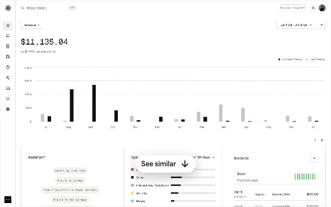

MiddayCurrent UI
Dashboard Overview
Understand the money
- Observed
- A leading monetary total and chart sit above secondary spending and invoice summaries.
- Adapt for AgentPay
- Give funded, earned and refunded USDC clear visual priority beside the workflow. Display observed amounts with their source run.
- Keep honest
- A revenue chart is a layout reference; it does not establish AgentPay savings or a live vault balance.